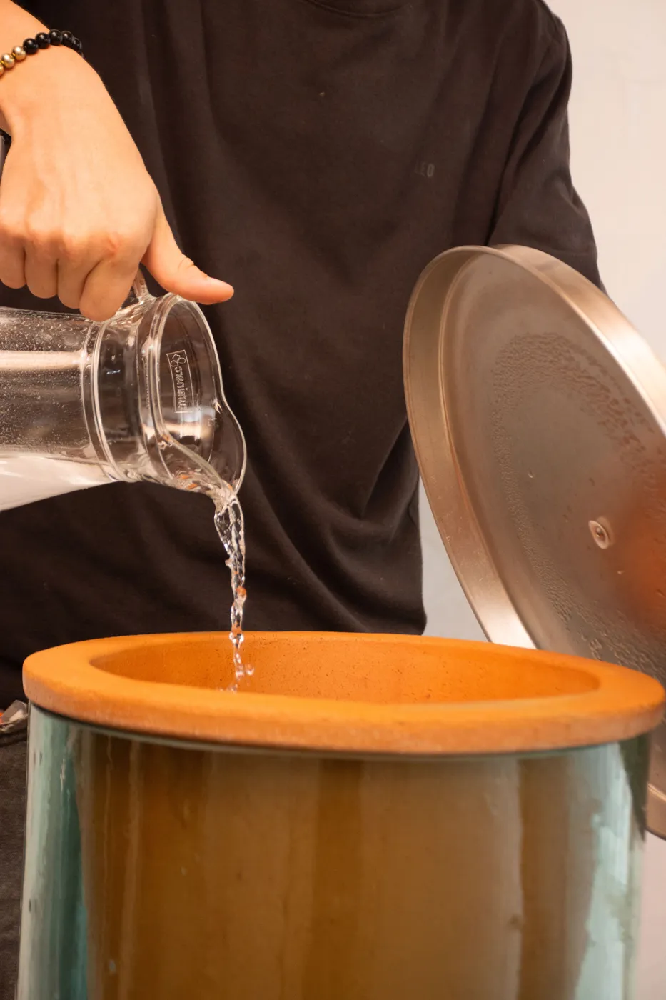
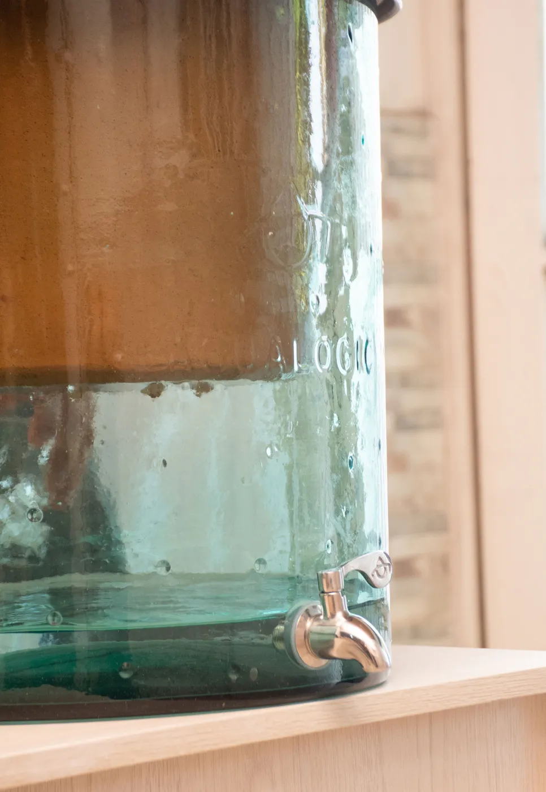
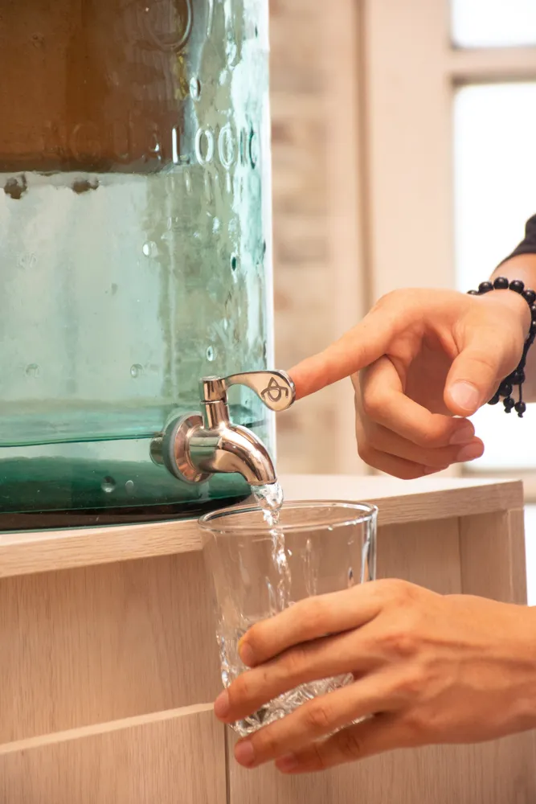

- La recarga en planta es lo más barato mes a mes, pero implica cargar 20 litros y depender del repartidor.
- Si compras marca comercial o domicilio, un purificador de $810.000 se paga en unos 5 a 7 meses.
- El purificador no usa luz ni instalación y da 1,5 a 2,5 litros por hora.
Llega el fin de semana y el botellón se acabó. Otra vez a llamar, a esperar y a subir 20 litros por las escaleras. Muchas familias en Villavicencio se preguntan si vale la pena cambiar el botellón por un purificador.
La respuesta honesta: depende de cómo compras el agua hoy. Aquí te damos los números y los casos en que cada opción gana.
Purificador vs botellón: la comparación rápida
| Criterio | Botellón | Purificador por gravedad |
|---|---|---|
| Inversión inicial | Ninguna (o el envase) | Desde $380.000, una sola vez |
| Gasto cada mes | $22.000 a $173.000, según dónde compres | Sin compra semanal |
| Cargar peso | Sí, 20 litros | No |
| Dependes de un repartidor | Sí | No |
| Electricidad e instalación | No aplica | No necesita |
| Mantenimiento | Lavar y devolver el envase | Limpieza cada 2 meses; vasija cada 2 años |
¿Cuál sale más barato?
Aquí está la verdad completa: no siempre gana el purificador en plata. Depende del precio que pagues por botellón. Calcula el tuyo:
Calculadora de ahorro
Precios de referencia en Villavicencio
| Cómo compras el agua | Precio por botellón | Gasto al mes (2 por semana) |
|---|---|---|
| Recarga en planta local | $2.500 a $7.000 | $22.000 a $61.000 |
| Marca comercial en supermercado | $14.350 a $19.900 | $124.000 a $173.000 |
| Domicilio con envase | cerca de $17.500 | cerca de $152.000 |
Son precios aproximados y pueden variar. Con 2 botellones por semana.
Comodidad: lo que no sale en la factura
Cero peso y cero esperas
Con el purificador llenas la vasija desde la llave y el agua cae sola al depósito. No subes botellones, no guardas envases vacíos y no esperas a que llegue el repartidor.

Llenas
Gotea
SirvesSin luz ni instalación
Funciona por gravedad. Lo apoyas en un mesón firme (o en una de nuestras bases y mesas) y listo. Si se va la luz, sigues teniendo agua.
Lo que sí debes tener en cuenta
- El agua cae despacio: de 1,5 a 2,5 litros por hora según AguaLogic. Llénalo antes de dormir.
- La vasija pide 5 cargas de curación al inicio, hasta que se va el sabor a arcilla.
- Cada 2 meses toca limpiarla con cepillo suave y sin jabón.
Calidad del agua: qué puedes verificar
La calidad del botellón depende de quién lo llena: cómo purifica, cómo lava el envase y cuánto tiempo lo almacena. Si compras botellón, pregunta eso a tu proveedor.
Del purificador, AguaLogic informa que la cerámica retiene sedimentos, turbiedad, cloro y microplásticos de más de 0,6 micras, además de bacterias como la E. coli, y conserva los minerales.
¿Cuándo conviene cada uno?
| Tu caso | Lo que te conviene |
|---|---|
| Compras marca comercial o domicilio (más de $14.000 por botellón) | Purificador: se paga en meses |
| Recargas en planta a $2.500 a $7.000 y consumes poco | Botellón puede bastar; el purificador te da comodidad y tranquilidad |
| No quieres cargar peso ni esperar repartidor | Purificador |
| Vives solo o en pareja | Mini de $380.000, el más fácil de amortizar |
| Estás de paso, por poco tiempo | Botellón |
¿Hacemos tu cuenta juntos?
Dinos cuánto pagas hoy por el agua y te recomendamos el modelo que más te conviene.
Preguntas frecuentes
¿Qué es más barato, un purificador o el botellón?
Depende de dónde compres. La recarga en planta ($2.500 a $7.000) es más barata cada mes. Con marca comercial o domicilio ($14.350 a $19.900), un purificador de $810.000 se paga en unos 5 a 7 meses con 2 botellones por semana.
¿El purificador reemplaza al botellón por completo?
Para beber y cocinar, sí. El modelo de vidrio guarda 20 litros y el agua gotea de 1,5 a 2,5 litros por hora, así que se repone sola mientras lo usas. Si tu consumo es muy alto, conviene elegir el modelo de 20 litros.
¿El agua del purificador sabe diferente al botellón?
Al inicio puede saber a arcilla. Con las 5 cargas de curación ese sabor desaparece. Además, según AguaLogic, el purificador conserva los minerales del agua.
¿Quieres entender cómo funciona por dentro y qué mirar antes de comprar? Lee la guía completa de purificadores en Villavicencio.